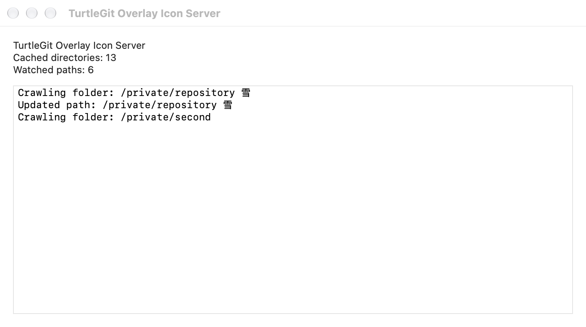
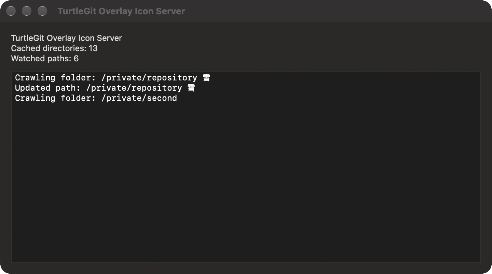

Status-cache menu bar interface
The independent Finder cache helper can show a menu-bar icon, following
TortoiseGit's optional CacheTrayIcon interface. Enable the background service in
Finder Integration, then set Advanced → CacheTrayIcon to true and Apply.
Setting it to false hides the icon and activity window. This preference does not
register a service or grant repository access by itself.
Open the icon's menu for Show Cache Activity, Enable/Disable Status Cache and Exit. Show/Hide Cache Activity replaces the Windows tray double-click with a discoverable native menu command. The icon reuses upstream turtle artwork; menu icons follow ShowAppContextMenuIcons. The tooltip shows cached directories and watched paths. Counts reflect this helper's published folder paths and actual FSEvents registrations, rather than the number of files in the repository.
The native activity window displays the latest fifteen crawl/update/error lines in chronological order. Text is selectable and scrollable, with native light/dark appearance. Closing this window leaves the service running; it can be reopened from the menu. The helper remains independent of the main app's windows.
Enable/Disable Status Cache shares the existing Finder overlay cache-mode preference. None uses normal folder badges; Enable restores the default status projection. Other icon, volume and include/exclude choices remain unchanged. This changes badge presentation; the existing background collector can continue watching and publishing repository metadata for Finder context menus. The app honors the accepted shared setting when it next opens instead of overwriting it with older local defaults. A later explicit Settings Apply can replace that snapshot. A damaged settings record is reported and retained, allowing retry.
Exit stops this helper instance after its readers and watchers settle. The icon shows stopping state and refuses repeated commands during cleanup. It does not quit the main app, revoke saved grants or unregister the login service. A later app/launchd request can start the registered helper again. Normal system Quit and termination signals use the same awaited shutdown path.
This ports TGITCache.cpp's tray tooltip/menu/window and FolderCrawler.cpp's
15-line activity ring at pinned commit
7338078f8ddd924b8cddee35f512f2286072136d. Local activity paths remain in the
helper's memory and window, not in its authenticated status reply or the shared
Finder snapshot. Counts and messages describe the native collector's work rather
than claiming a Windows directory-cache implementation.
Signed login-item registration, App Group transfer, physical menu-bar interaction, accessibility clients and Finder rendering remain separate acceptance work. Local checks use private settings and a native activity window without installing a real menu-bar item or registering a user's launch job. See background service for deployment prerequisites.
Native activity appearance
These unaltered compositor captures show the shipping activity window with private fixture counts and paths. They verify window presentation, not a signed installed service or a real menu-bar item.

